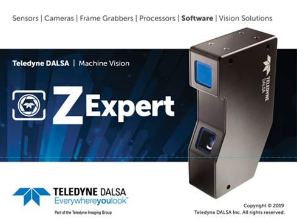
Contents
Multi-Sensor Calibration Navigation Tree
Selecting Profile or Surface Display
Creating a Unified Measurement Space
Creating a Multi-Sensor CalIbration Layout
Synchronization Wizard Features
Sapera Z-Expert is an intuitive graphical utility that allows configuring and setup of Teledyne DALSA’s GigE Vision compliant 3D profile sensors such as the Z-Trak. Z-Expert allows configuring of 3D sensor parameters and provides live display of a profile or 3D surface view.
Z-Expert can save 3D data as 3D images using industry standard point cloud formats like STL, PLY, and so forth. Parameter settings can also be saved in a configuration file.
Z-Expert also provides a step-by-step process to create a unified measurement space using multiple sensors. It can configure up to 16 sensors in a variety of topologies using user- defined calibration targets.
|
The current version provides support for Teledyne DALSA Z-Trak 3D Profile Sensors: Use the legacy CamExpert application for all other Teledyne DALSA acquisition devices, such as frame grabbers and GigE cameras. |
Before you begin to use Z-Expert, make sure sensors are powered and cables are connected.
1. Select a sensor.
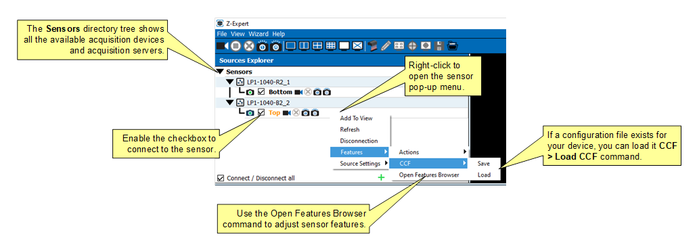
2. Verify sensor settings.
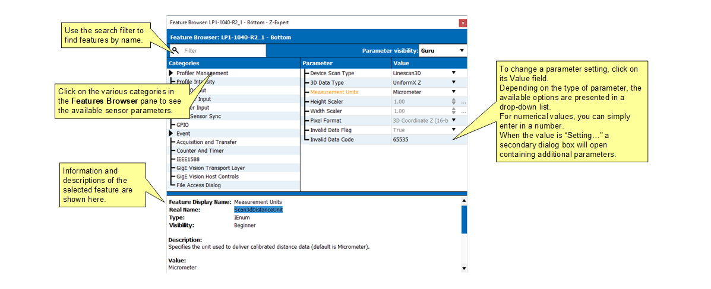
3. Acquire and display image(s).
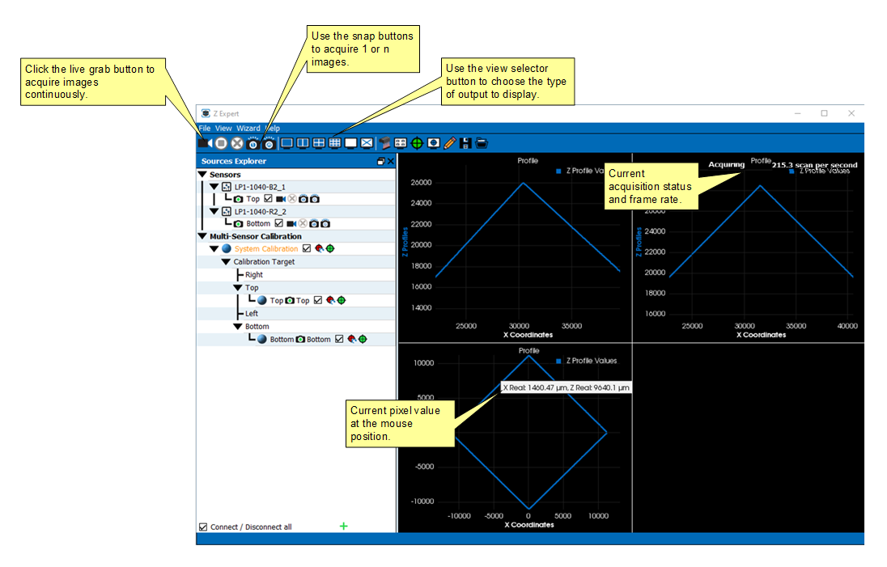
The Z-Expert user interface consists of the application main window, and several different panels that group together common functionality.
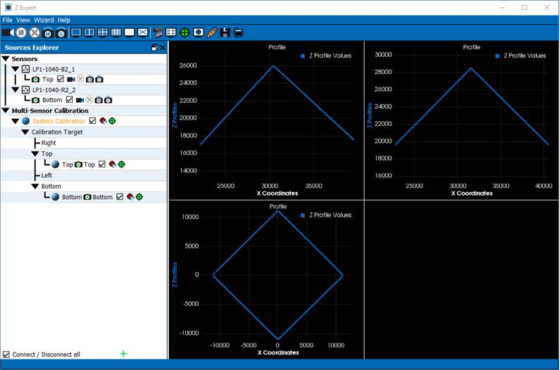
Window panels include:
· Sources Explorer
· Features Browser
· Display
· Output Messages
Panel display can be toggled as required using the View menu command.
The Z-Expert Task Bar groups common commands into control groups for quick access to common functions, such as:
· Scan control buttons
· View control buttons
· UMS (Unified Measurement Space) layout setup buttons
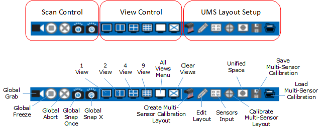
Global Grab / Freeze Button
The Global Grab button initiates a scan from all selected sensors using the current feature settings. Click again to stop scan.
|
Global Grab |
|
|
Freeze |
Some feature values can be changed during live scan but for
certain others to take effect the scan must be stopped.
Global Snap 1
Execute a single scan.
Note a scan can consist of more than one profile. Use the Data Output->Profiles Per Scan feature to change the number of profiles per scan.
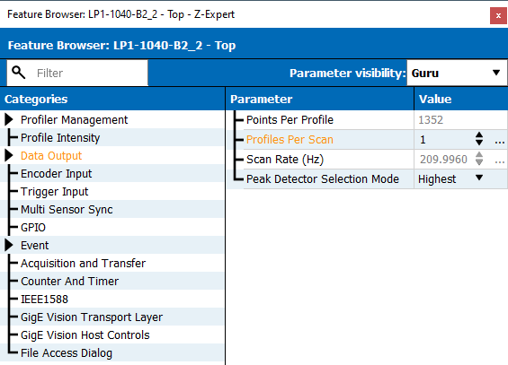
Global Snap X
Execute a grab of x number of scans.
Since resulting 3D data from each scan is stored in a host buffer, changing the Buffer Count, controls how many scans are done with each SNAP X command.
To change the Buffer Count do the following:
1
Select a sensor form the Source Explorer window
2
Right click to access the context menu
3
Select Source Settings panel
4
Change Buffer Count value
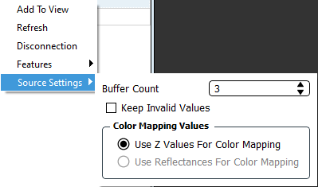
Global Abort
Aborts the current scan acquisition in progress.
View Layout Buttons
The display area allows preview of the live scans. Using the View layout buttons the display area can be divided into multiple independent viewing areas. Each view area can be connected to a sensor by simply dragging and dropping the name of a selected sensor on the view area.
Use the View buttons to create 1 to 9 views. Use the All View button for additional views, such as 12 or 16.
|
1 View |
|
|
2 View |
|
|
4 View |
|
|
9 View |
|
|
All Views. Opens a pop-up menu to select from available views:
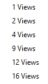 |
|
|
Clear Views |
Create Unified Measurement Space Layout
Opens the Unified Measurement Space Layout Selector dialog. See Creating a Unified Measurement Space more details.
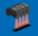
Edit Unified Measurment Space Layout
Use this button to edit currently selected UMS Layout using the Calibration Quick Setup dialog. Note, if any UMS parameters are changed the system must be recalibrated.
Sensors Input
Adds all available sensors to the display window.
Calibration Icon
When the UMS is successfully calibrated the calibration icon is shown in green. For UMS to be successful each selected sensor in the UMS layout must also be calibrated successfully.
If any sensors are not calibrated, the System Calibration identifies a partially calibrated state in yellow.
Red indicates an uncalibrated state.
Unified Measuerement Space
Displays the resulting merged image, combining output of all selected sensors as a unified measurement space.
Save UMS Calibration
Opens the Save Calibration dialog to save the current UMS calibration data to a .mscalib file.
Load Multi-Sensor Calibration
Opens the Load Calibration dialog to load a previously saved .mscalib file.
The Z-Expert main menu bar groups common commands under the File, View and Settings menus.
The File menu contains the following commands allow you to load an image from disk or a previously saved Multi-Sensor Calibration file (.mscalib).
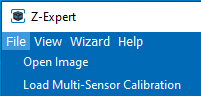
|
COMMAND |
DESCRIPTION |
|
Open Image |
Loads an image from file. Supported file formats are .png, jpg, bmp, tif and crc. |
|
Load Multi-Sensor Calibration |
Loads a multi-sensor calibration from file (.mscalib). |
The View menu commands allow you to toggle the display of the various Z-Expert panels.
Panels include:
· Source Explorer
· Features Browser
· Console Messages
· Events Registration
· Source Information
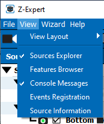
The View Layout commands allows you to specify the display window configuration.
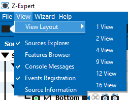
The Wizard menu command opens the Synchronization Wizard.
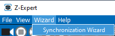
The Help menu commands allow you to open the Z-Expert help document and display the current version and plugin information about the installed Z-Expert application.
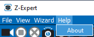
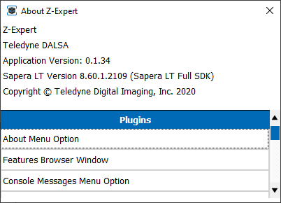
This dialog also lists the plugins currently supported by this version of Z-Expert.
Sources Explorer
The Sources Explorer displays all acquisition sensors installed and available in the system as well as any Multi-Sensor Calibration available. It also shows any unsupported GigE devices or loaded images.
After selecting an acquisition sensor, use the q or u buttons to toggle the display of the available acquisition servers supported by the sensor.
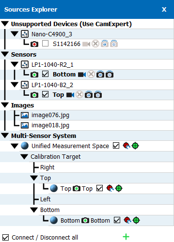
The sensor icon is shown in blue for available sensors, green for sensors connected to the Z-Expert application, and red for unavailable sensors (offline or connected to another application).
|
|
Blue icon indicates available sensor. |
|
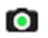 |
Green icon for connected sensors. |
|
|
Red for unavailable sensors (offline or connected to another application). |
Use the Connect / Disconnect checkbox to free the sensor to allow control access from other applications (Z-Expert always connects to sensors in read/write mode).
Sensor Pop-Up Menu Commands
For each sensor, the right-click pop-up menu provides access to a variety of commands.
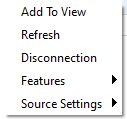
· Add to View: Adds the currently selected sensor to an available View panel.
· Refresh: Refreshes the status of the currently connected sensor.
· Disconnection: Disconnects the current sensor from the Z-Expert application, freeing it to connect to other applications.
Features Command Menu
The Features command menu groups additional commands related to sensor configuration, such as opening the Features Browser.
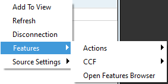
The Actions sub-menu includes commands to perform a device reset as well as to save the current sensor feature settings to an available Power-up Configuration user set or load a configuration.
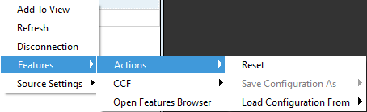
A previously saved user set of feature settings or the factory default configuration can be loaded using the Load Configuration From sub-menu.
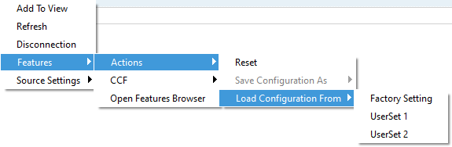
The CCF sub-menu allows you to load or save a camera configuration file (.ccf).
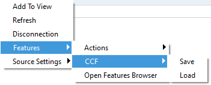
The Multi-Sensor Calibration tree shows the System Calibration and its associated sensors and their calibration status. For more information, refer to the Creating a Unified Measurement Space. To perform Multi-Sensor Calibration see the Creating a Multi-Sensor Calbration Layout section.
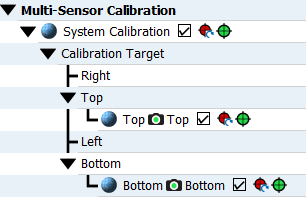
When a sensor is successfully calibrated the calibration icon is shown in green.
If not all sensors are calibrated, the System Calibration identifies a partially calibrated state in yellow.
Red indicates an uncalibrated state.
Click the Reset Calbration icon to reattempt the calibration process.
System Calibration Pop-Up Menu
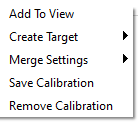
Create Target
The Create Target menu commands allow you to create a custom Prism target for multi-sensor calibration.
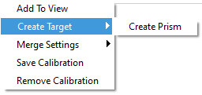
Prism Editor
The Prism Editor allows you to create a custom target for multi-sensor calibration. Specify the number of points in the target and their corresponding X, Z position. If the sides are equilateral, enter the side length (as determined by the sensor measurement unit (Scan3dDistanceUnit feature), and click Populate.
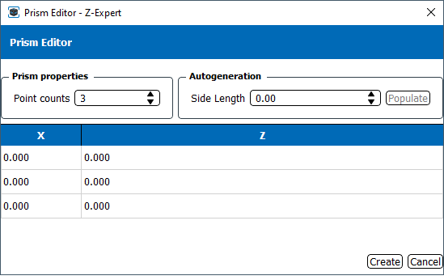
Click Create to add the Prism to the System Calibration.
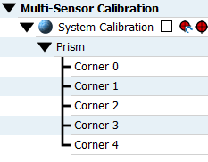
You can then assign sensors to their respective corners by using the corner’s right-click pop-up menu.
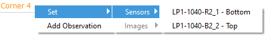
Merge Settings
When using a multi-sensor calibration, the Merge Settings commands determine how overlapping points from different sensors are treated.
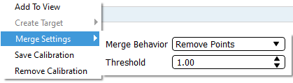
The Merge Behaviour drop-down list includes the following options:
· Keep All Points: Keep all points as-is.
· Remove Points: Points closer to each other than the given threshold are replaced with one point.
· Voxel Centroid: Replace all points within a voxel with their centroid.
The Threshold determines how close points must be to implement the selected merge behaviour..
The Features Browser panel allows viewing or changing all parameters supported by the acquisition sensor; refer to the acquisition sensor documentation for information on supported features.
Categories organize related parameters together; click on the category to view its parameter group. Available categories are sensor-dependent. Context help for the selected parameter is displayed in the information window below the Parameters panel.
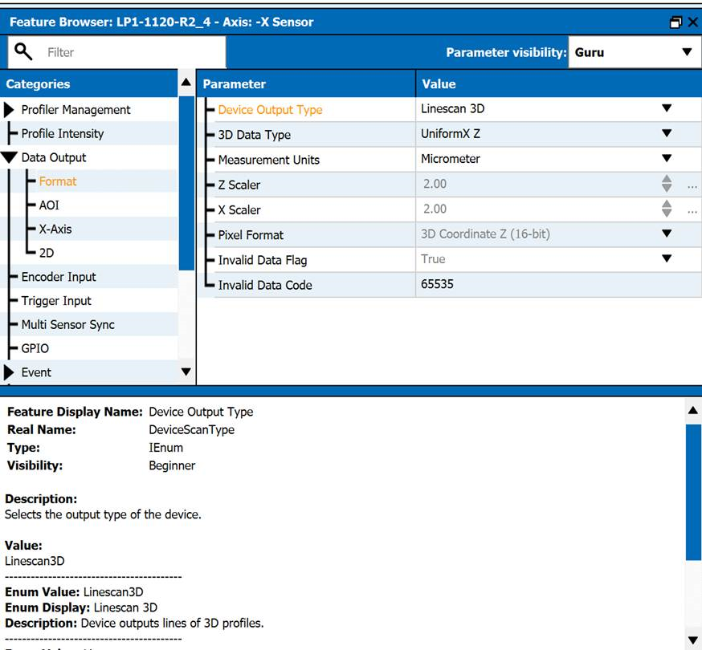
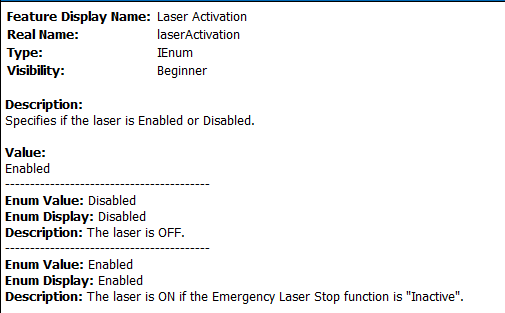
Z-Expert includes a search utility to locate features by name.
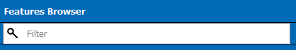
Results are filtered by keyword with only the categories containing the keyword displayed. For example, filtering for “Offset” shows the following results (sensor-specific):
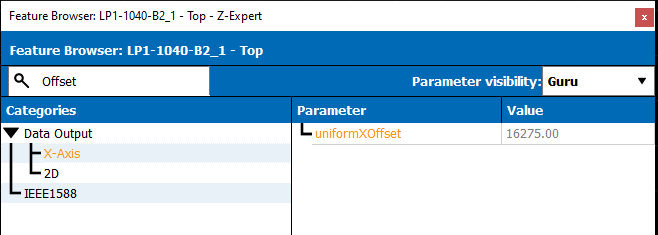
For GenICam or Gig-E Vision supported cameras, the Parameters visibility drop-down list allows you to display different parameters, based on different levels of ease-of-use. Currently, parameters are divided into three levels of use: Beginner, Expert, and Guru.
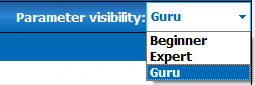
The Display window contains toolbar elements (buttons and drop-down list) to easily control image acquisition and display.
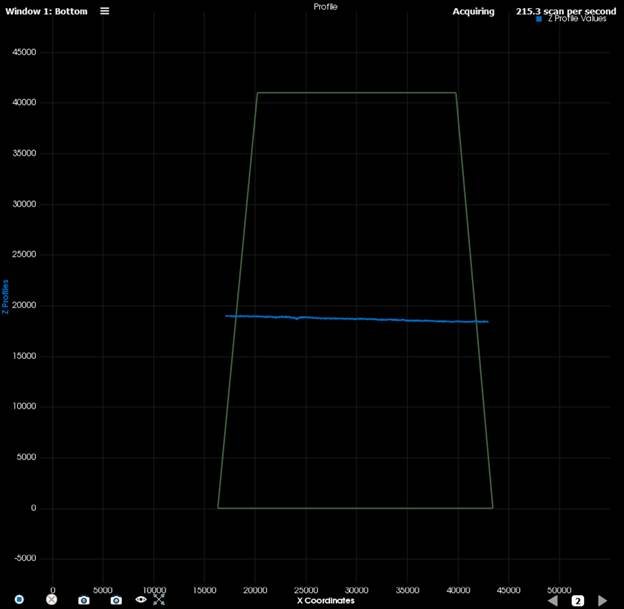
The display window can be configured to hold multiple display panels to show the acquisition from multiple devices simultaneously using the View Layout buttons.
Each display panel shows the selected acquisition view (profile or surface view). Depending on the pixel format, reflectance values may also be available for display. When the pixel format is Uniform X, the scaling and offset parameters determine the axis units.
Each display panel contains Grab, Abort, Snap 1 and Snap X buttons to control the acquisition.
The status bar displays information such as the acquisition status (Idle or Acquiring) and, if Acquiring, the scans per second.
The buffer control allows you to view selected profile buffers following an acquisition of multiple profiles (Grab or Snap n). Clicking on the information icon opens the Buffer Information dialog for the selected buffer.
Use the display type button to select whether to view Profile or 3D Surface output.
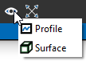
Surface Display
For Surface display, the image height (profiles per scan) should be greater than 1. Standard mouse controls can be used to rotate, shift and zoom the surface display.
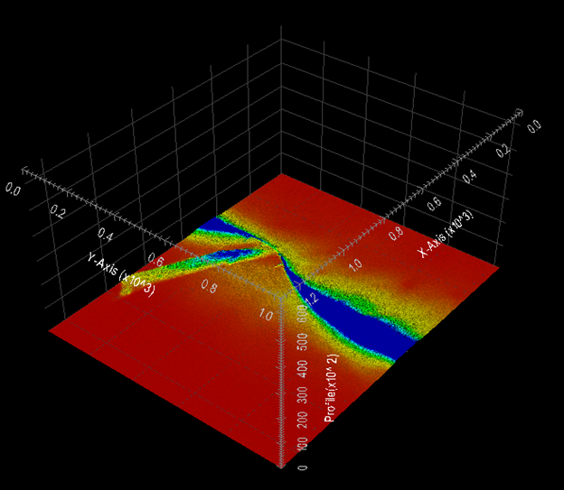
Click on the Window Menu icon to open the pop-up menu.
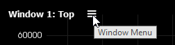
The available pop-up menu commands depends on the viewing mode (profile or surface).
If no Multi-Sensor Calibration is loaded, the menu includes the Settings option.
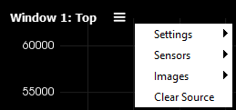
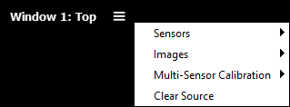
The Mulit-Sensor Calibration option allows you to select to display the system calibration or a connected sensor in the window.
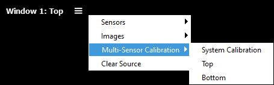
Settings Menu
The Settings menu, in Profile View, includes the following options:
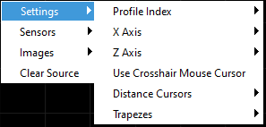
When in Surface view, the Settings menu includes the Scales features which allow the X, Y and Z scales to be adjusted.
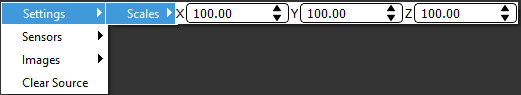
Profile Index
When the Profiles Per Scan feature is set to more than 1, the Profile Index allows you to select the profile in the buffer to view.
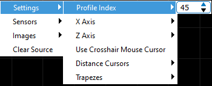
X Axis
The X Axis setting allows you to choose if the X coordinate in the display represents the index of the profile point or the X value in real-world coordinates.
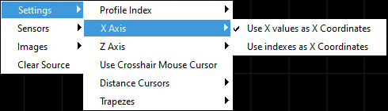
Z Axis
The Z-Axis menu commands allow you to select the valuess to display on the Z-axis, as well as change the display color. The available values to display depend on the image output format (for example, Uniform X, XZ or XZRW). For example, reflectance values are only available when the 3D sensor uses XZRW format.
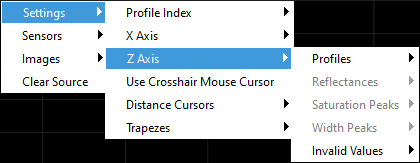
Toggle the display of values using the Show command. To change the display color of the element, use the Color command and select the required color using the Color Picker dialog.
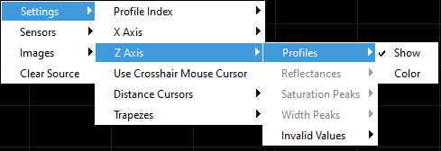
Use Crosshair Mouse Cursor
When enabled the mouse cursor in the display window is shown as a crosshair: .
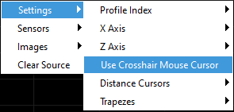
Distance Cursors
When enabled distance cursors allows simple measurements to be taken between parallel lines along the X and Z axes.
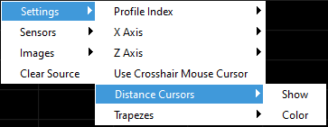
Hovering the mouse cursor over a line provides the distance measurement as a tool-tip.
Trapezes
Z-Expert allows you to set a trapezoidal area-of-interest (AOI), a trapeze, within the 3D sensor field-of-view (FOV) to limit the output of profile values to within this trapeze; profile points outside the trapeze are ignored.
The trapeze can be positioned interactively using the mouse to focus on the required area of interest.
If a portion of the trapeze falls outside the FOV an intermediate trapeze displays the actual resulting AOI of the current trapeze position.
The trapeze coordinates are assigned to the 3D sensor AOI features.
Use the Trapezes > Lock command to fix the trapeze position so that it cannot be moved. Use the Interactive Trapeze Color and Intermediate Trapeze Color commands to set the trapeze display color using the Color Picker dialog.
Sensors
The Sensors menu allows you to select the available sensor output to display in the window.
Images
The Images menu provides access to the Save Images and Load Image commands.
The Clear Source command removes the current 3D sensor from the display window, freeing it to be assigned to another source as required.
The Color Picker dialog allows you to specify the display color for a variety of graphic elements in the display window to customize visualization.
The Output Messages panel displays informational, warning and error messages generated by the Z-Expert application.
Right-click anywhere in the Output Messages panel to open a pop-up menu which allows you to clear all the messages in the window, or select all or copy selected messages.
You can use the mouse to select specific messages or [Control]+A to select all messages.
Use the Events Registration pane to select the events to monitor for each available sensor.
The Source Information dialog displays key feature settings for the selected sensor. To open the dialog, use the View > Source Information menu command. Drag-and-drop a sensor onto the dialog to view its feature settings.
Multiple Z-Trak 3D sensors can be calibrated to use the same world coordinate system. This allows sensors at different positions to acquire profiles of the same target object and construct a single image from merging multiple observation points. By using multiple sensors to profile the target at different angles, a more complete representation of the target object can be achieved.
The Z-Expert tool, included with Sapera LT, performs the calibration using a target object of known dimensions. Two or more sensors can be calibrated.
Key points for creating a unified measurement space:
- Measurement Unit: All sensors must use the same measurement unit.
- Z-Axis: All sensors must be aligned on the same Z-axis plane.
- Target object prism: The target object prism cannot be moving.
Sensor Alignment
When calibrating multiple Z-Trak sensors, the X and Z axes of all sensors must belong to one plane. In other words, the laser sheets of all sensors belong to the same plane. To ensure that the field of view (FOV) of each sensor is correctly aligned, an alignment plate can be used to position the sensor bodies; this secures all laser scanning line sheets on the same XZ plane.
This allows for 3 degrees of freedom for all sensors: translation in X, translation in Z and rotation around Y.
Different model sensors can be used within the same calibration, provided they all use the same Measurement Units feature setting (for example, microns). When using multiple sensors Teledyne DALSA recommends to not acquire simultaneously to avoid interference by other sensor lasers, but to pulse each sensor acquisition consecutively. During calibration, Z-Expert automatically synchronizes sensor lasers internally, returning sensor features to their original settings when calibration is complete. For more information on synchronizing sensors, refer to the Synchronization Wizard section.
Calibration Target Object
Multi-sensor calibration requires that a target object of known dimensions be placed in the scene and visible in the FOV of each sensor. The calibration target object, referred to as a prism, presents a wedge that appears as a corner to each sensor. Target object prisms are polygons in the XZ plane, with that polygon extruded along the Y direction. The X and Z coordinates of all vertices of the polygon in the XZ plane are required to accurately define the prism.
Typically, the origin of the coordinate system is considered the center of the prism. The prism can have a variable number of sides; for example, a triangle to an eight-sided octagon. The number of corners is not limited, but well-defined corner angles allow the calibration algorithm to easily identify corners and calculate transformations with greater accuracy.
Each sensor “observes” a corner whose position is defined in relation to the target object coordinate system. In general, the more the target object fills the FOV, the more accurate the calibration.
The calibration algorithm identifies the corner assigned to each sensor, and given the dimensions of the prism, calculates the required calibration. Only one corner should be presented to each sensor to ensure accurate results. Not all corners need to have associated sensors; that is, there can be more corners than sensors depending on the target prism shape and the sensor configuration.
Any shape prism is possible; it does not have to be equilateral (equal length sides), as long as only one corner is presented to each sensor.
Key points for the target prism are:
- Convex /\ corners: Corner points must be convex /\; concave \/ corners are not permitted due to secondary reflections.
- Counter-clockwise corner indices: Any corner can be the first corner, but subsquent corner points must proceed from the first in counter-clockwise direction.
- Corner profile: Each sensor must target a different single corner of the prism. The corner profile should be clean and centered in the FOV, with a margin of space on each side of the X-axis.
- Stationary target prism: The target prism must not be moving.
The individual points of a prism can be assigned coordinates relative to a system coordinate origin that lies elsewhere on the common Z-axis.
Creating a Multi-Sensor CalIbration Layout
Z-Expert includes a Calibration Quick Setup utility which provides a simplified method to calibrate common sensor configurations, such as ring and linear configurations.
Before beginning calibration, verify that all sensors are properly configured and acquiring profiles containing a corner of the target object prism. To verify sensor feature settings use the Features Browser; modify feature settings as required.
To create a new layout, click the Create Multi-Sensor Calibration button.
Select the layout that corresponds most closely to your application setup. Note that not all sensors in the layout need to be present (minimum 2).
Calibration Quick Setup
Sensors are represented as blue squares; target prisms are shown as black squares or triangles. The shape of the target prism should correspond to that as shown in the layout (for example, a triangle or square). The Quick Setup wizard requires that target prisms have equilateral sides. If you require a custom target then you must manually create it using the Prism editor; refer to the Using a Custom Target Object section.
Right-click on the required square icon representing the sensor to assign a sensor to that position. Do this for all sensors present in the configuration.
Enter the target side length of the prism; the unit is defined by the Measurement Units feature setting specified in the sensors; all sensors must use the same world-coordinate unit (for example, microns).
The orientation parameter provides various typical configurations for the selected layout, such as straight and angled.
The Point Removal Method determines how overlapping points from sensors are handled. Possible values are: Sets the point removal mode. Possible values are:
· Keep All Points: Keep all points as-is (default).
· Remove Points: Remove some points that are close to some other points.
· Voxel Centroid: Replace all points within a voxel with their centroid.
The Point Removal Threshold sets the threshold at which points closer to each other than the given threshold are replaced with one point. Default value is 1.0.
To apply the configuration, click Create.
To perform the calibration, select the Apply Calibration checkbox for each sensor in the Calibration Target tree and acquire a profile from each sensor. To do so, enable acquisition for each sensor using its checkbox, and click the Grab, Snap or Snap X button.
Verify that each sensor is successfully profiling its assigned corner in the Display panel.
If calibration is successful, the Calibration icons will be green.
To view the merged image, right-click on the System Calibration and click Add To View.
The merged view displays the resulting image from all the calibrated sensors’ profiles.
The calibration transformation can now be saved to file to use with the Sapera LT SDK to merge images at an application level or to be loaded back to Z Expert in a future session. To do so, right-click on the System Calibration and click Save Calibration.
Multi-sensor calibration files are saved with the .mscalib file extension.
Z-Expert supports using a custom target object with any number of sides and side lengths. Only one corner or vertex should be presented to each sensor in the configuration. The same corner should not be presented to more than one sensor.
To create multi-sensor calibration system using a custom target, right-click in the Sources Explorer panel and click Multi-Sensor Calibration System.
Right-click on the System Calibration and click Create Target.
In the Prism Editor, enter the X, Z coordinates of each point; click + to add a point to the prism. The unit is defined by the Measurement Units feature setting specified in the sensors; all sensors must use the same world coordinate unit (for example, microns).
If the target prism is equilateral, enter the number points, the side length and click Autogenerate; the corner coordinates are added automatically. The furthest corner on the positive X-axis is considered, by default, to be at Z = 0.
The Prism and its corners are added to the System Calibration in the Sources Explorer panel. Right-click on a corner to assign a sensor to it (Add Observation performs the same function).
Select all the sensors in the System Calibration and acquire images from all of them until the calibration icon for each sensor is green, indicating a successful calibration.
The Synchronization Wizard is designed to help synchronize acquisition timing between multiple 3D sensors. Synchronization relies on the Precision Time Protocol (PTP) capabilities of the sensors.
Synchronization Wizard automatically adjusts the following sensor features as required:
· profileRate
· AcquisitionLineRate
· ExposureTime
· multiSensorSyncMode
· multiSensorSyncGroup
· multiSensorSyncDelay
· ptpMode
· TriggerMode
· TriggerSelector
· TriggerSource
· TriggerOverlap
· TriggerDelay
To add sensors to the Synchronization Wizard, use the mouse to drag and drop them from the Sources Explored into the Synchronization Wizard pane.
To perform the synchronization click the Synchronize button:
Click the Move Sensors To View button to add the sensors to the Display window (if not already added).
The Synchronization Wizard configures several sensor features to accomplish synchronization. These include:
- Mode: Determines how triggers are propagated from the Master sensor to Slave sensors.
- Trigger Rate (Hz): Master sensor trigger rate when the Trigger Source is set to Internal Trigger.
- Master Sync Delay: Delay applied after receiving a trigger for the Master sensor to acquire a scan.
- Trigger Source: Specifies the Master sensor trigger source as either an Internal Trigger (generated at the specified Trigger Rate) or an External Trigger.
Mode
The Mode feature setting determines how triggers are propagated from the Master sensor to Slave sensors.
The following options are available:
- Multiplex: Sensors are triggered in succession, with an equal period between acquisitions, such that only one sensor is acquiring a profile at any moment. This prevents possible interference from other sensors if the laser is strobing with acquisition.
- All at once: All sensors acquire simultaneously. A delay is introduced at the Master sensor to provide a margin for inherent network latencies to ensure that all sensors receive the triggers commands before the requested acquisition execution.
- Manual: Synchronization delays for each sensor are set manually.